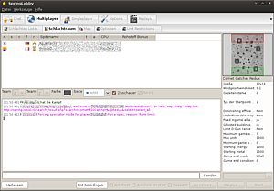
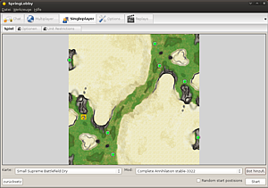
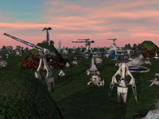
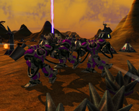
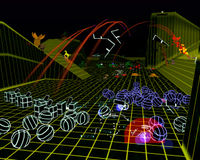
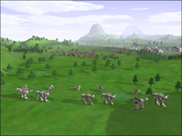
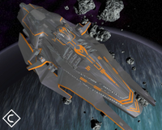
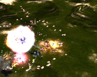
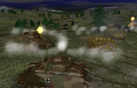
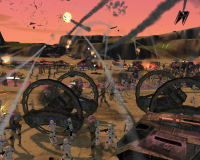

Spring Engine
Dieser Artikel wurde für die folgenden Ubuntu-Versionen getestet:
Ubuntu 16.04 Xenial Xerus
Zum Verständnis dieses Artikels sind folgende Seiten hilfreich:
Die Spring Engine  ist eine quelloffene Plattform, um Echtzeitstrategiespiele auszuführen. Ursprünglich als Neuauflage von Cavedogs Total Annihilation in 3D geplant, bietet Spring nun einer Fülle von komplett unterschiedlichen Spielumgebungen ein "zu Hause".
ist eine quelloffene Plattform, um Echtzeitstrategiespiele auszuführen. Ursprünglich als Neuauflage von Cavedogs Total Annihilation in 3D geplant, bietet Spring nun einer Fülle von komplett unterschiedlichen Spielumgebungen ein "zu Hause".
Sie kann von jedem interessierten Kreativen zur Erstellung eigener Echtzeitstrategiespiele (RTS) genutzt werden. Als Vergleichsbeispiel kann die Source-Engine von Valve herangezogen werden, welche beispielsweise die Plattform für "Half-Life 2" darstellt.
Rechtlicher Hinweis¶
Da die Situation mit dem momentanen Eigentümer der Rechte an Total Annihilation (TA) ungeklärt bleibt, muss auf eine Besonderheit hingewiesen werden. Spiele die auf TA aufbauen (alle *A-Mods) sind nur legal spielbar, wenn eine legale Version des original TA vorhanden ist. Es ist jedoch davon auszugehen, dass die Nutzung von TA-Material geduldet wird.
Installation¶
Spring kann über die offiziellen Paketquellen [2] installiert werden. Folgende Pakete sind zu installieren:
spring (universe)
springlobby (universe)
 mit apturl
mit apturl
Paketliste zum Kopieren:
sudo apt-get install spring springlobby
sudo aptitude install spring springlobby
Um über die Springlobby im Multiplayermodus zu spielen, muss immer eine sehr neue Version installiert sein. Gggfs. reicht dazu die Version in den offiziellen Paketquellen nicht und es müssen die Pakete aus dem PPA installiert werden. Ein lokales Spiel funktioniert jedoch in jedem Fall.
PPA¶
Spring kann über eine eigene Paketquelle installiert und aktuell gehalten werden.
Adresszeile zum Hinzufügen des PPAs:
ppa:spring/ppa
Hinweis!
Zusätzliche Fremdquellen können das System gefährden.
Ein PPA unterstützt nicht zwangsläufig alle Ubuntu-Versionen. Weitere Informationen sind der  PPA-Beschreibung des Eigentümers/Teams spring zu entnehmen.
PPA-Beschreibung des Eigentümers/Teams spring zu entnehmen.
Damit Pakete aus dem PPA genutzt werden können, müssen die Paketquellen neu eingelesen werden.
Nach der Freischaltung der Paketquellen müssen folgende Pakete installiert werden:
spring (ppa)
springlobby (ppa)
mit apturl
Paketliste zum Kopieren:
sudo apt-get install spring springlobby
sudo aptitude install spring springlobby
Optional können folgende Pakete installiert werden, sie bieten zusätzliche Karten und Hilfsprogramme:
spring-mods-kernelpanic (universe, Mod "Kernelpanic")
spring-maps-kernelpanic (universe, Karten zum Mod "Kernelpanic")
spring-javaai (universe, Java AIs)
mit apturl
Paketliste zum Kopieren:
sudo apt-get install spring-mods-kernelpanic spring-maps-kernelpanic spring-javaai
sudo aptitude install spring-mods-kernelpanic spring-maps-kernelpanic spring-javaai
Experten-Info:
Um die Torrentfunktionalität zum Herunterladen von Karten und Mods zu nutzen, muss die Springlobby mit der Option OPTION_TORRENT_SYSTEM=ON neu kompiliert werden. Dazu den Debian-Quellcode beschaffen und in der debian/rules hinter dh_auto_configure diese Option ergänzen. Eine entsprechende Zeile kann dann wie folgt aussehen:
1 2 | override_dh_auto_configure: dh_auto_configure -- -DOPTION_TORRENT_SYSTEM=ON -DSPRINGLOBBY_REV:STRING=$(SLVERSION) -DCMAKE_BUILD_TYPE=RELWITHDEBINFO |
Zusätzlich wird als Paketabhängigkeit libtorrent-rasterbar-dev zum Bauen und entsprechend libtorrent-rasterbar6 bzw. libtorrent-rasterbar7 (ab Ubuntu 13.04) beim Ausführen benötigt[1]. Diese Abhängigkeiten sind in den universe-Quellen[2].

Bereitmachen¶
Um an einer Multiplayer-Partie teilzunehmen, sind nach der Installation folgende Schritte nötig:
Anpassung der Einstellung und Test im Singleplayermodus gegen eine KI
Freischalten eines Ports im Router
Registrierung eines Spielernamens
Beschaffung von Spielen und Karten
Einrichtung¶
Alle Einstellungen können über die SpringLobby durchgeführt werden. Andere Lobbys können je nach Bedarf nachinstalliert werden.
Die Einstellungen zu Auflösung, Farbtiefe etc. können über "Edit -> Spring settings" angepasst werden, allgemein sollten die Einstellungen moderat gehalten werden, da einige Effekte sehr viel Leistung fordern. Der LUA-Support sollte auf jeden Fall aktiviert werden, da viele Mods diese Skriptsprache nutzen und die GUI ansonsten sehr unansehnlich wird.
Falls nach Spielstart der Bildschirm nur kurz schwarz flackert kann eine niedrigere Bilschirmauflösung helfen.
Öffnen eines Ports im Router¶
Wenn selbst ein Spiel gehostet werden soll benötigt Spring einen offenen Port, um eine Verbindung aufnehmen zu können. Dieser liegt normalerweise bei 8452 im UDP-Protokoll, Spring findet beim Start einer Partie den geöffneten Port jedoch selbstständig. Ports lassen im Benutzerinterface des Routers meist unter dem Punkt "Portforwarding" oder "NAT" öffnen. Näheres kann im Artikel Portweiterleitung nachgelesen werden, hier sind auch allgemeine Informationen zu den Protokollen zu finden.
Registrierung eines Spielernamens¶
Beim Start der SpringLobby startet automatisch ein Einrichtungsdialog, bei dem man sich mit seinem Wunschnamen registrieren lassen kann. Zu beachten ist, dass keine Passwort-Zusendung möglich ist. Das Passwort sollte man sich deshalb gut merken.
Spiele und Karten¶
Die Installation von Spielen (Mods) und Karten (Maps) gestaltet sich sehr einfach. Die dazu nötigen Karten (im üblichen .sd7-Format) und Spiele (im .sd7 oder .sdz-Format) müssen einfach nur von geeigneten Seiten (siehe Links) heruntergeladen und in den Verzeichnissen ~/.spring/maps/ (Karten) bzw. unter ~/.spring/mods/ (Spiele) abgelegt werden. Änderungen der Rechte sind nicht erforderlich.
Standardmäßig ist der Mod "Balanced Annihilation" im Paket enthalten.
Über "Tools -> Reload maps/games" können hinzugefügte Inhalte neu eingelesen werden.
Einzelspieler¶
Für Einsteiger wird empfohlen, sich erst einmal offline mit den jeweiligen Spielen auseinanderzusetzen und so Gebäude und Einheiten kennen zulernen. Dazu gibt es verschiedene Möglichkeiten:
Ein Kooperationsspiel (alleine oder online) wie CA oder BA Chicken Defense

Einzelspieler gegen eine KI¶
Da mit dem Spring-Paket alles nötige bereits vorinstalliert wird, ist hier keine weitere Anpassung erforderlich.
Um eine Partie zu starten genügt es, eine Karte, ein Spiel (hier CA in der Version rv3322) auszuwählen und eine KI über "Bot hinzufügen" hinzuzufügen. Boni, Bündnisse und Seite lassen sich über ein Kontextmenü (einfach mit der Maus über Spielerposition auf der Karte fahren) verändern und den eigenen Vorstellungen anpassen, um sich beispielsweise Verbündete zu geben.
Jedoch entfaltet Spring sein ganzes Potenzial nur im Kampf gegen echte Menschen!
Kooperativ¶
Einen sehr interessanten Spielmodus stellen kooperative Modi dar, hier spielen ein oder mehrere Spieler gegen einen übermächtigen Gegner, der Einheiten nutzt, die der Spieler nicht bauen kann. Gemeint sind hiermit Außerirdische, die in Wellen angreifen und die Spieler ähnlich wie bei Starship Troopers in stetig wachsenden Massen malträtieren.
Dabei wächst natürlich nicht nur die Zahl der Gegner, sondern auch deren Gefährlichkeit stetig an, bis die Königin sich höchstpersönlich die Ehre gibt, Euch von der Karte zu putzen!
Gestartet werden kann eine solche Partie, indem entweder BA Chicken Defense oder eine Version von CA installiert wird. Dann kann entweder über "Mod" (BA) oder über "Bot hinzufügen" (CA) die dazu nötige KI der Partie hinzugefügt werden.
Informationen zum Spiel¶
Screenshots¶
|  |
| P.U.R.E. |
|  |
| Complete Annihilation |
|  |
| Kernel Panic |
|  |
| Expand&Exterminate |
|  |
| Eternal Struggle |
|  |
| Evolution RTS |
|  |
| Spring 1944 |
|  |
| SW: Imperial Winter* |
* noch nicht frei verfügbar


Links¶
springfiles.com
- Umfassende Sammlung von Maps, Mods und Erweiterungen
- Erstellt mit Inyoka
-
 2004 – 2017 ubuntuusers.de • Einige Rechte vorbehalten
2004 – 2017 ubuntuusers.de • Einige Rechte vorbehalten
Lizenz • Kontakt • Datenschutz • Impressum • Serverstatus -
Serverhousing gespendet von